version 2020-09-22 by Artem Pronichkin
submit a
comment
(“issue”) or
edit
If you happen to run Windows 10, life's good for you. You don't have to care about Windows Update. It just happens automatically, managed either by your friendly administrator, or by Microsoft itself.
But what if you run Windows Server or a similar Microsoft operating system, such as Azure Stack HCI or Hyper-V Server? Or, even more interesting, what if you manage a small bunch of such servers?
If this is Windows Server 2016 or Windows Server 2019 installed in “Server with Desktop Experience” installation option, then it's may be very simple. (Until you need to scale this approach to tens or hundreds of servers.) Just run Settings app, find the “Windows Update” option and hit the button.
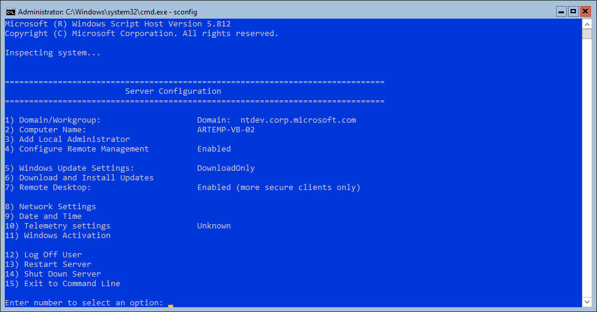What if the server in question is installed in Server Core installation option or runs a Server Core-only operating system such as Azure Stack HCI or Hyper-V Server? If you still prefer to manage one server a time, you can log in locally (or via Remote Desktop) and run SConfig. This provides similar user experience to the Settings app mentioned above.
When you manage multiple machines, selecting different options manually (in GUI or SConfig) may be not the very productive way. Hence, people often automate routine operations—including update installation.
A building block of a script is a command line. A simple script can be as short as a single command. A more complex script runs different commands sequentially and often has logic to run one command based on the output from another command.
If you know exactly what updates you need, you can just install a package from a local drive or a file share. This works well for major Windows security and quality updates (aka “Latest cumulative updates” or LCUs), as well as some other “OS native” updates such as Servicing stack updates (SSUs.)
There are two package formats, and you typically can use either one, depending on your scenario and preferences.
These are the files with msu extension. To get one, download from Microsoft update catalog or the Download center.
To install, run wusa.exe command, followed by optional switches and the full path to a package file.
These are the files with cab file extensions. Technically, such files may contain arbitrary payload—this is just a common format to compress and store together multiple files. Many popular software installers use this format as well. Heck, you can even create your own cab files using makecab (Cabinet maker) utility. However, what we're talking about here is a special case of using this format. It requires specific contents and a digital signature. In other words, one cannot simply create an OS component package themselves.
The easiest way to obtain such package is to extract contents from a Standalone update (msu) file. To do that you run wusa.exe with /Extract Surprise—these files are actually cab files themselves!
Basically, both of the above options share the same main downsides. They take you into a business of package management—i.e. deciding what to install and when, including satisfying dependecies.
The idea behind Server Core has always been to provide a minimalistic, stripped-down, purposefully built server operating system. It contains “just enough” to run your typical server workload—such as a database system, a network service or a Hyper-converged infrastructure (HCI.) It does not include a desktop user environment such as Start menu, taskbar, file explorer, etc. This makes Server Core a poor choice for some workloads such as Remote desktop services (formerly known as Terminal services) or legacy software where application compatibility is a concern.
For this reason, many customers felt in love with Server Core, and some others tend to avoid it. Historically, the most professional and savvy administrators appreciated Server Core for small size, flexibility, faster deployment and reduced attack surface. Additionally, the limitations of local user interface are often seen as a benefit because it is less prone to human error and prevents configuration drift over time, since it encourages remote management at scale and automation. In fact, Microsoft declared Server Core the default and recommended installation option for Windows Server since 2012. (And we have been quite persistent about it since then. Really.)
On the flip side, less experienced administrators or IT generalists often found Server Core confusing and not intuitive enough. The primary way to configure and troubleshoot Server Core has always been command line—at least until you set up functional networking connection and some sort of authentication (preferably via Active Directory.) Yes, there are options to avoid command line completely. For instance, one could use Answer files (aka “unattend.xml”) or System Center for OS deployment and initial configuration. But these come at additional cost—in terms of professional experience, licensing money, or both. For this reason, shortly after the very first release of Server Core in Windows Server 2008, it formed a niche for various friendly local configuration tools. Among which, CoreConfigurator happened to be the first one. Several other similar tools followd quickly. And some of them even had commercial versions!
By the way, Server Core in Windows Server 2008 was originally released with a new inbox configuration tool, a small script creatively named “SCregedit.wsf”. It offered some basic features like configuring Windows update and enabling Remote desktop , but also exposed some very niche settings like IPsec or DNS SRV record configuration for domain controllers. Heck, it even came with a built-in list of other helpful commands! Try this:
CScript.exe /noLogo C:\Windows\System32\SCregEdit.wsf /cli
Hey, don't look at me like that—remember, it was before Internet became available on every phone in every corner of the planet. Also, before PowerShell got installed by default everywhere, so you could not even rely on the universal Verb-Noun naming convention to discover new commands on your own.
But we heard the feedback loud and clear: Windows Server (and Hyper-V Server) needs a free, inbox convenient local configuration tool. This is how SConfig was born , debuting in Windows Server 2008 R2 and released in 2009. Unlike those 3rd party configuration tools, SConfig did not “play pretend Control panel.” It had no fancy icons (rather, no icons whatsoever) and no mouse-friendly menus. It was a classic console app with input-driven menu. E.g. you had to type 1 to enter domain join command, or type 2 to rename computer, and so on. (If you are unfamiliar with SConfig and would like to learn more, here's a decent document written at Windows Server 2016 times.)
SConfig tremendously helped performing initial server configuration tasks. This was when customers started seriously considering Server Core as organization standard, not an esoteric toy. But, to be honest, this did not solve Server Core manageability problem completely. And some of those 3rd party configuration tools continued to evolve. In fact, some of them are still available, even though archived or seemingly abandoned for quite some time.
Moreover, SConfig was written in VBScript—language which already turned 13 in 2009. In Windows Server 2008, PowerShell was not even an option because .NET Framework was not available on Server Core (even though there were some pretty hacky ways to install it forcibly.) Windows Server 2008 R2 was the first Server Core release to officially include .NET Framework and PowerShell. However, they were not installed by default back then. Quite interestingly SConfig could be used to install PowerShell on Server Core. So, those days VBScript was the only viable option.
But this also came at cost. Part of that cost was no native support for localization. SConfig in any language was a completely separate script file. Another aspect was not so obvious but turned out a big deal over time. VBScript is so old and unpopular that fixing bugs in SConfig turned out a big challenge, let alone extending its functionality with new features. In fact, nobody touched this code with any improvements or modernizations for more than a decade. Until today.
(I may be exaggerating here, but just a tiny bit!)
Windows Server kept evolving for the past 10 years. In fact, it was quite a journey! Meanwhile, SConfig might have seem stuck in time. But not our plans to make Server Core ubiquitous and more flexible for different customer scenarios. SConfig 2.0 started last year as an intern project. The goal was to rewrite SConfig in PowerShell, effectively opening the door for future improvements and feature additions.
Now this project is almost concluded. Little known fact: SConfig feature was officially adopted by our awesome “Server management experiences” (SME) aka Windows Admin Center (WAC) team. While we're still flushing out the details and fixing a few remaining bugs, the new PowerShell-based SConfig has finally seen the light of day. It is available in the Public preview release of Azure Stack HCI. (If you have not heard of Azure Stack HCI recently, stop what you're doing and go read the announcement from Microsoft Inspire 2020, or watch this session recorded by my great friend Cosmos Darwin.)
To be clear: while SConfig has been rewritten in PowerShell from ground up (no more VBscript!), this does not mean it has been transformed into PowerShell cmdlets. Quite the opposite: the tool's look and feel remains the same, familiar for those who got used to managing Server Core over the past decade. And while we have rather ambitious plans of extending its functionality, the scope of this preview is 1:1 feature parity with the legacy SConfig, as it exists today in Windows Server.
| 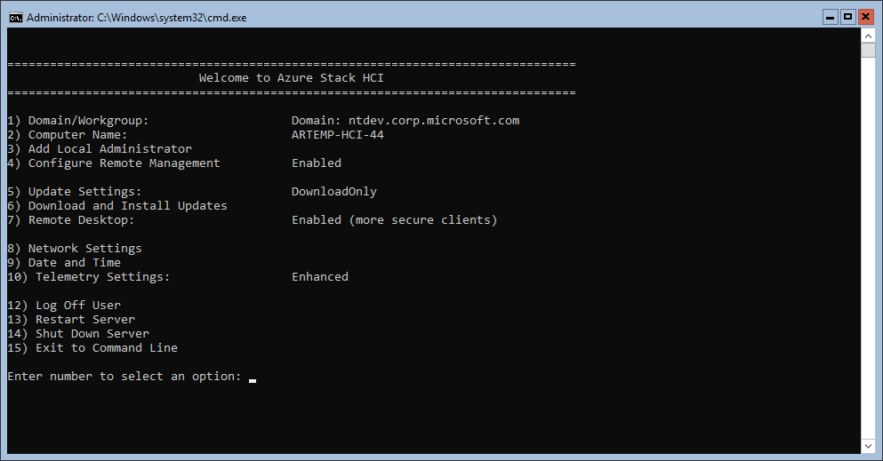 | |
| SConfig in Windows Server, version 2004 | SConfig in Azure Stack HCI public preview |
If you noticed that I mentioned that SConfig is now owned by the Admin Center team, you may be scratching your head now: what does SConfig have to do with Admin Center? Isn't it an unnatural, artificial partnership? Doesn't SConfig compete with Admin Center, to some degree? Should one of them fully absorb and replace the other? Is it yet another case where Microsoft has a “split brain” symptom and duplicates efforts because it does not know what it's doing?
Well, not at all! Here's the idea that drives us. SConfig is a great inbox management too, and will always be. It has it advantages of being always available and lightweight, but it will never be as easy to use and as powerful as Admin Center. On the other hand, Admin Center is a great management tool which is out of the box. You need to have your server up and running, and ready for remote management in order to take advantage of Admin Center, or of any other central management tools that you might prefer, such as System Center.
In other words, the job of SConfig is not to replace Admin Center (or vice-versa.) SConfig works best when you need to prepare a server for being managed remotely. This typically includes no more than five steps.
That's all! Note that typically you do not need to enable remote management (WinRM) because it's enabled by default in all modern server operating systems. (It is disabled by default on Windows 10, though.) Neither you typically need to change Firewall rules. By default, remote access from any subnet is permitted , provided this subnet is within your Active Directory boundaries. You may still have to explicitly enable this in case you want to allow remote management from a different subnet while not being domain-joined . But remember, we always recommend you to join a domain first—and SConfig is a great tool for that! It will save you from a lot of headache.
In fact, helping the user with these tasks is more important than ever with Azure Stack HCI. Historically, Windows Server was available in two installation options: Server Core and Server with Desktop Experience. So, inexperienced users and IT generalists would likely prefer Desktop Experience, while experienced admins often deployed Server Core. At the same time, HCI (SDDC) features in Windows Server, such as Storage spaces direct (S2D) and Software-defined networking (SDN) were only available in Datacenter edition. It made these features primarily targeted to large enterprise customers, sometimes leaving out smaller IT shops. And, by coincidence, large enterprise is where most of the experienced admins were employed. Now, with Azure Stack HCI we're trying hard to break this tradition and promote HCI/SDDC features to small and medium business (SMB), as well as remote offices and branch office (RO/BO) scenarios. On the other hand, unlike Windows Server, Azure Stack HCI is only available in Server Core. And hence convenient, streamlined local experience for initial configuration on Server Core becomes a new critical requirement. This is why SConfig is nowadays more important than ever!
Of course, any subsequent management task, such as forming a cluster or joining an existing one can (and should) be done remotely, using your favorite centralized management tool, or maybe scripts. (Hey Jaromir!)
Remember I told you that the scope of this release is merely feature parity with the legacy VBScript-based SConfig? Scratch that! Of course, we could not release a new thing which is only as good as the old one. And while we have to hold our excitement for many more new features for longer, there's still a couple of them available already in Azure Stack HCI today!
When you log in to Windows Server, what do you see by default?
| 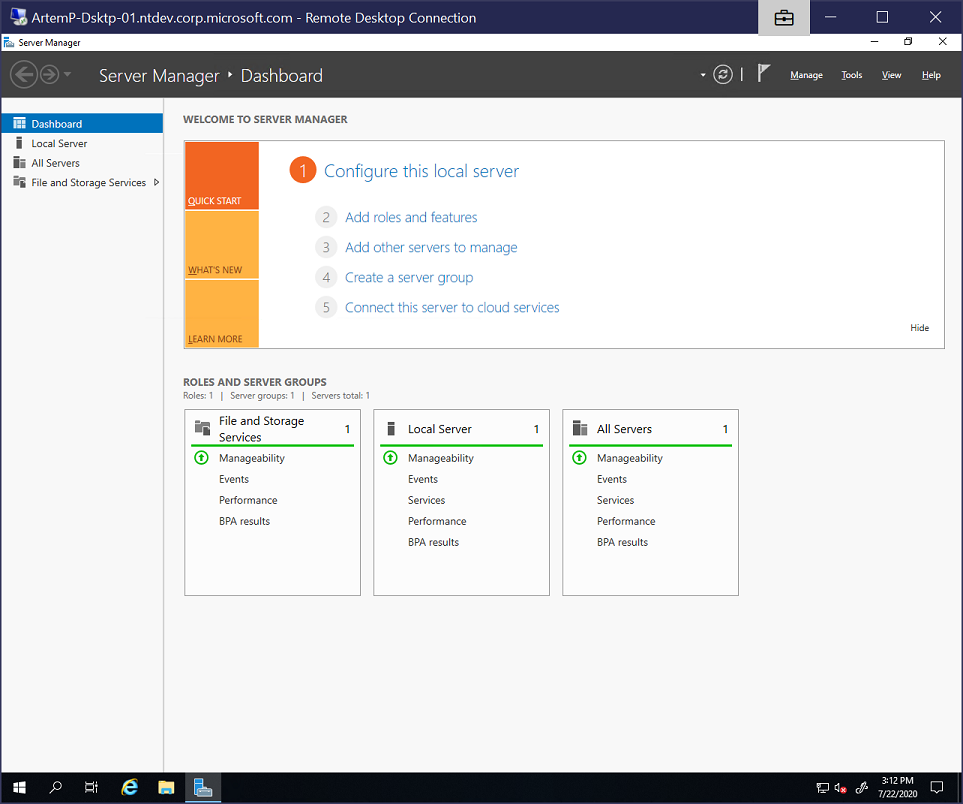 | 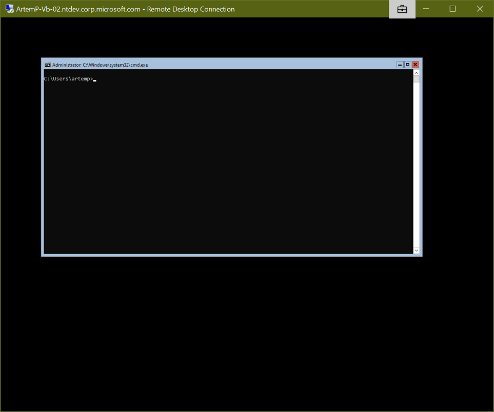 |
| Server with Desktop Experience in Windows Server 2019 | Server Core in Windows Server, version 2004 |
Ouch, Server Core does not look very friendly! This minimalistic black box may be ideal for hardcore IT Pros with 10 years of industry experience, but that's not everyone. Yes, you might know about SConfig (thansk for reading my post!) But what if you don't? Or, you might have heard of it—but how do you use it? Rejoice, SConfig now starts by default when you log on!
Technically, this is not a new feature. SConfig does start by default in Hyper-V Server already (but not in Windows Server.) However, that is done slightly differently.
| 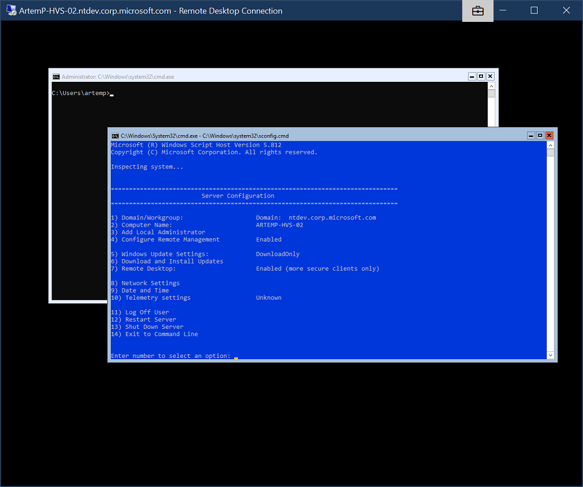 | 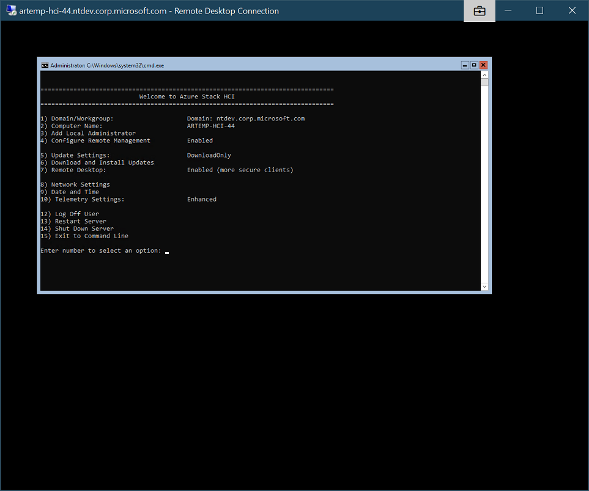 |
| Hyper-V Server 2019 | Azure Stack HCI public preview |
As you can see, in Hyper-V Server, SConfig started as a separate window. This is certainly better than no SConfig at all, but might have been confusing for some. E.g. which window should I use? Why is the other window even there? Why do they overlap? Specifically, if you are using remote server gear with a crappy IP-KVM solution, or log on locally while sitting in the datacenter with no mouse, this design was suboptimal. Now, with Azure Stack HCI, SConfig starts inline with command prompt window. In other words, SConfig is truly the new default shell for server management!
Speaking of command prompt window... remind me, what year it is? Is it still CMD being the shell? Not anymore! For the first time in history, the default shell on a server operating system is PowerShell!
It might not be very obvious from the pictures, but think of it for a second. Given that SConfig is now written in PowerShell, it has to run in a PowerShell window! And, actually, if you use option [15] Exit to command line guess where you will end up?
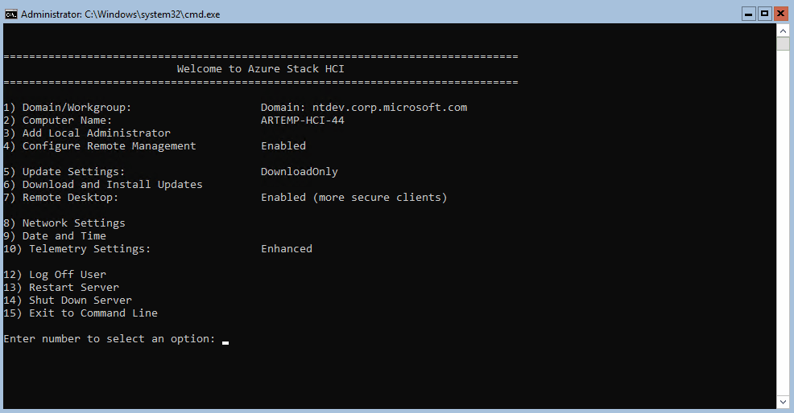
Don't be mad at my capitalization style—I hate typing
multiple capital letters consequently
So, technically, it is PowerShell what's the default shell now. And SConfig is just an app which starts automatically in the shell. But... this is only a part of the story.
Remember, PowerShell is still an optional component in the operating system. Yes, it is installed by default—but one can still remove it from the OS, as well as from the base image. Who would remove PowerShell? Well, people who do not need it. And they might want to reduce image size even further. For example, you might also want to remove .NET Framework. This kind of makes sense: after all, it's a big chunk of code, and it also requires frequent updates. Worse of all, those updates are not part of OS cumulative updates. So, if you feel really ascetic, you might end up removing .NET Framework, but this will also remove PowerShell because it depends on the former.
Of course, given that PowerShell is now the default shell, we cannot leave anyone without any shell whatsoever. So, instead of just hard-coding PowerShell as the default shell unconditionally, we had to make the OS smarter. Now, if PowerShell is not available, it will fail back to the old behavior and launch CMD as the default shell!
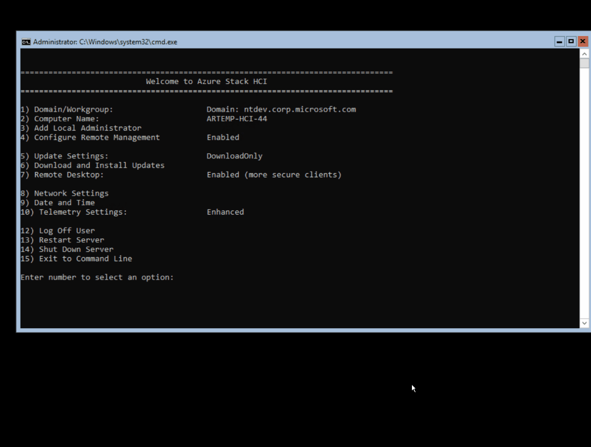
I had to edit this one—cut out the boring parts!
Fun fact: in the above animation you may have noticed that removing PowerShell required reboot—because it was in use. In fact, we were using PowerShell to remove PowerShell! But adding it back did not require a reboot, because we had to use CMD and DISM for it.
Have you notices something interesting in the very end of the previous animation? It might be surprising for you if you have used Server Core before. This is actually pretty cool. You may want to get back and watch it again. Take your time.
For those who have not used Server Core before (or it's been a while), let me remind you. Arguably, this was the single biggest pain point of Server Core, especially for novice admins. Imagine you were doing something in the command line, but got stuck. Or you just did not like it how it's going. Or you did an awkward move with your mouse. Or maybe you just wanted to exit the session and thought that the “exit” command was your friend. (Spoiler alert: it was not.)
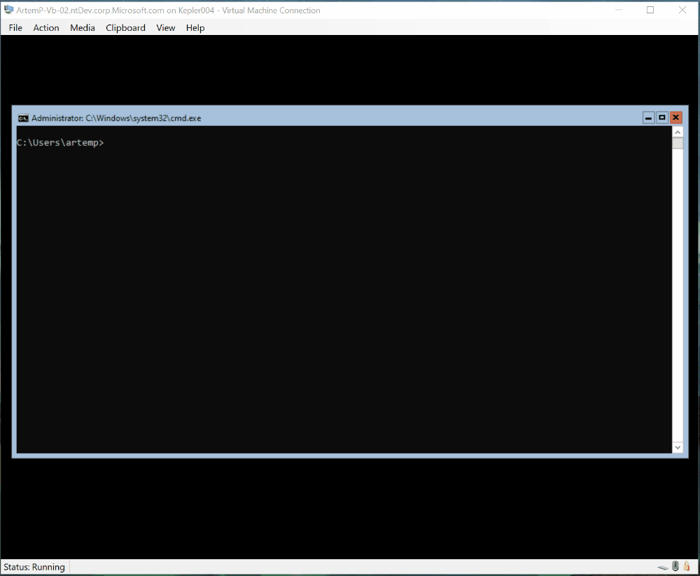
Windows Server, version 2004. I had to capture it with actual VM
window borders—otherwise you might not get it how miserable
it gets in the end!
Yes, that's right. If you closed the CMD window, or exited it, or somehow else made it disappear you would end up with... pretty much nothing. Just an empty black space. Remember, there's no taskbar or Start menu in Server Core. So, there's nowhere to even log off.
What would you do? I bet, many customers, should they found themselves in this unfortunate situation, would just forcibly reboot the server. You know, by holding the power button... Of course, there were better ways out of this. For instance, you could gracefully restart it remotely. Or open a PowerShell remoting session. Or log in as another user. Or... if you were really creative, you could hit Ctrl+Alt+Del (Ctrl+Alt+End in RDP) and use it to log off, or even summon the Task Manager, and use it to launch a new instance of CMD! But certainly, it would be too naïve from us to expect that level of trickery from an average server admin.
So, Azure Stack HCI to the rescue!
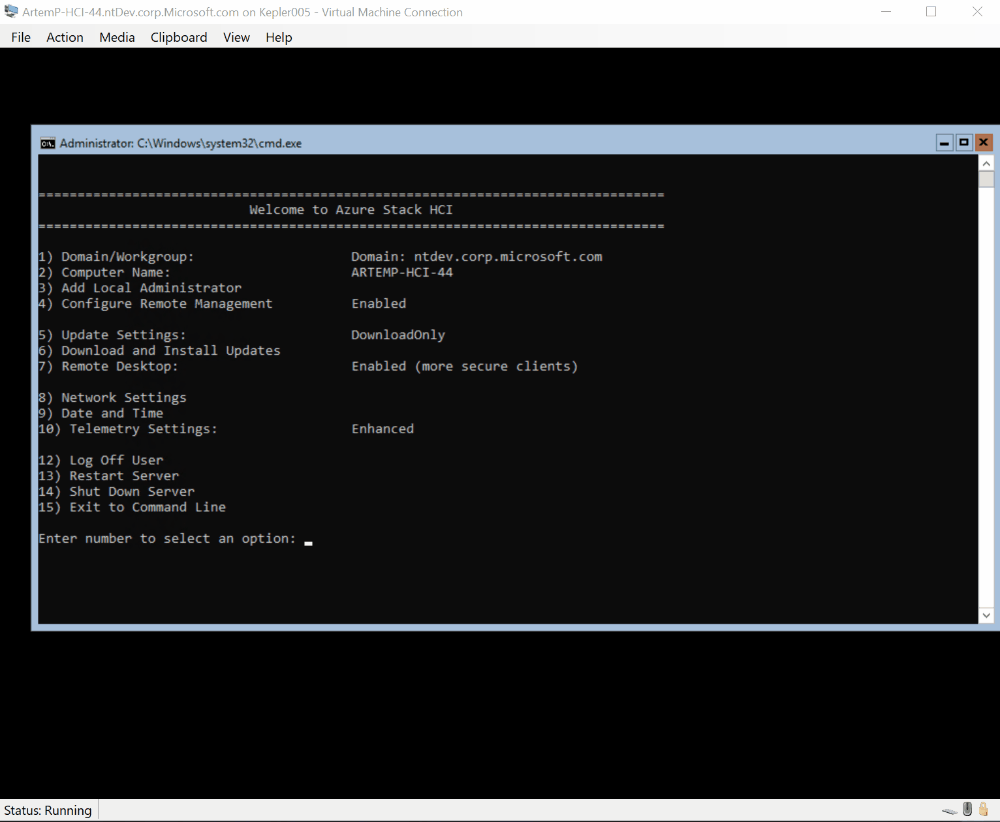
Azure Stack HCI. Just remember: if you really mean to log off,
you should use either option [12] in SConfig or
type “logoff” in command line
As you see—no matter what you do, SConfig always gets your back! PowerShell restarts automatically, and SConfig pops up—as the decent default shell should! (Of course, Explorer.exe does the same on Windows 10 and Server with Desktop Experience.)
And before you ask—yes, this behavior works for when CMD is the default shell in case PowerShell is uninstalled. Just a small caveat: in this case, no SConfig for you! As it's a PowerShell app now, it cannot be run when PowerShell is not avaiable. I assume if you're so sophisticated that you decided to remove PowerShell, you know your ways and may not need SConfig whatsoever. And if you just uninstalled PowerShell (or .NET Framework) by mistake you can always use DISM in CMD to enable it back.
Because it's now written in PowerShell, we started to give SConfig a major facelift. I.e. streamline it and make visually consistent and more pleasant to look at. This work is not done yet, but here's one early move.
When using the legacy SConfig, every now and then you might face with some pop-up window which does not look like it belongs here. E.g. sometimes it was a black box asking for credentials, and sometimes—a GUI window with actual buttons. (Buttons? In my SConfig? No way!) I mean, they did their job, but user experience was suboptimal and confusing, especially over low-perf KVMs and lossy network connections.
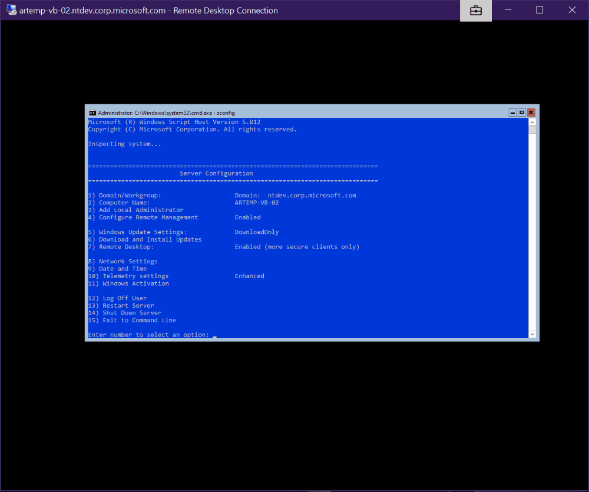
SConfig in Windows Server, version 2004. That's what I personally
call awkward
So, we cleaned this all up. Now all the prompts look like native SConfig prompts. I.e. they're displayed inline with the text.
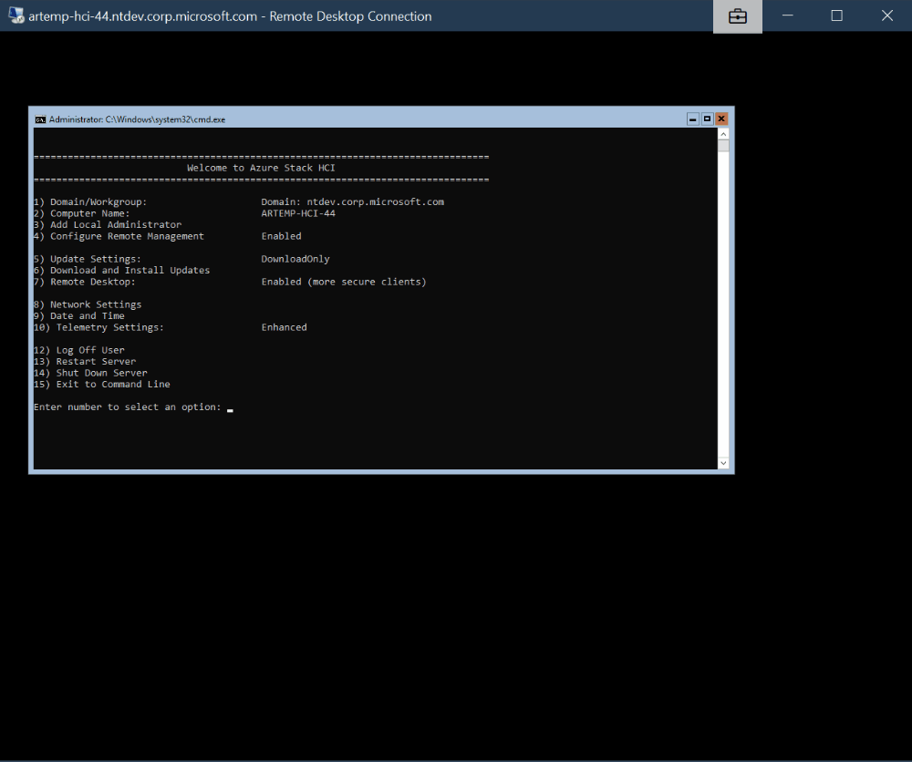
Azure Stack HCI. The only pop up window that we kept standing out
is the credential prompt. Because it's the standard secure way to
prompt for credentials in PowerShell
As you can see, all the above changes were more of infrastructure improvements rather than valuable new features. While they were long due and absolutely necessary to lay down the foundation for future enhancements, I would totally understand if you're not as excited about them as we are.
Rest assured: we do have a lot of new excitement features in the pipeline, and SConfig future is brighter than ever. Hopefully, we have proven this point so far. That said, we have not yet finished prioritizing this work, i.e. we are yet to decide what to build sooner than later. So, as often with roadmap development, we need your help! Please let us know what features you need most or want to see in SConfig. The preferred way to log this feedback is through Azure Stack HCI UserVoice. Alternatively, you can hit me up on Twitter or email.
Speaking of feedback, maybe I should have given you some heads up of what is knowingly different and was a deliberate choice of our team. It's not like we don't want to hear your feedback on these items (quite the opposite, in fact!) I just want provide some explanation in advance, so that you won't think it's a bug or an oversight.
Yes, the legacy SConfig had a distinctive blue background. (Have you ever noticed it's a slightly different color from PowerShell-ish blue ?) It may have been familiar for many of you, but we intentionally decided to give up on this. Given that SConfig is now the default experience, it does not have to stand apart anymore. Moreover, colorful backgrounds are known to cause accessibility issues. For these and other reasons, the modern PowerShell (née “PowerShell Core”) has now black background by default, too.
Plus, it makes it easier to immediately make sure you're in the new SConfig and not in the legacy one.
I admit, this may seem a little weird. After [10] Telemetry Settings the next menu item is [12] Log off user . Did we simply miss a number by mistake?
Not really. If you look at some of the legacy SConfig screenshots above, you'll see that number 11 used to be a key for Windows Activation. There's no OS Activation in that sense for Azure Stack HCI: the OS itself is a free download and free to install. (You'll have to register it with Azure, however, to start using it for hosting production VMs—and pay as you go.) Hence, this menu item is obsolete.
Should we just have moved the subsequent commands one step up each, to make 11 key for Log off, 12 for Restart, and so on? Or should we have placed something new on number 11 to avoid skipping a number? Good questions! We seriously considered these options. However, my current hypothesis is that there are actual people out there who got used to the old SConfig in the past years. They may have developed muscle memory around one or more of these keys. And if true, those people won't appreciate that if we suddenly moved their cheese. E.g. if I got a habit of pressing 12 to Log off, I would not be amused if suddenly it becomes a key for Restart, and so on.
Am I right? Am I wrong? Was skipping the number the best decision? We honestly do not know yet, and that's one of the points of writing this post. We look forward for your feedback and opinions on this, among other things.
As I said couple times already, the new SConfig in Azure Stack HCI public preview is our early take. By no means we believe it's feature complete or bugs free. In fact, we're already aware of some of the rather unfortunate issues in the current build. Remember, it's a preview release, so we have a plan of fixing all of these issues in the coming months. But worth noting anyway, especially if you feel stuck or angry with us.
In fact, this is not a new issue. SConfig had always behaved this way. But I understand it's quite confusing, especially around such delicate topic as data collection and privacy. So wanted to call it out anyway.
When you install any operating system, the default telemetry level applies, unless you have changed it. The default for Windows Server is Enhanced, while the default for Azure Stack HCI is Security only. However, SConfig will show it as “Unknown,” in either case. Once you change the telemetry level at some point (using SConfig or otherwise, e.g. via Group Policy), SConfig will show you the actual value (even if you change it back later.)
If you use SConfig to set up static IP address assignment to one of the network adapters, it will offer you a convenient default value for Subnet mask (which is “255.255.255.0” or /24.) The problem is, it does not currently read this value properly, and the whole operation fails silently. Effectively, the IP address is not being set.
To work around this issue, always type in the Subnet mask explicitly, even if you mean to set it to the same value (255.255.255.0.)
In the same network settings area, SConfig shows you what DNS servers have been configured. Except when it does not. That is, sometimes this list is empty, even though the DNS Servers are configured correctly.
As a workaround, if DNS Servers are not displayed, or the values do not match what you expect them to be, check the actual settings by typing Get-DnsClientServerAddress in PowerShell.
When using option [2] Computer name, you cannot define a new computer name using non-Latin characters, such as Cyrillic or Asian symbols. Anything except A-Z, numbers and hyphen is not allowed. This behavior is consistent with Rename-Computer cmdlet.
As a workaround, you may use the old Netdom utility in PowerShell.
As I noted before, Remote management is always enabled by default, unless disabled e.g. by Group Policy. However, in non-English versions, SConfig fails to display it correctly and fails back to showing “Disabled.” This happens even after you use SConfig to configure and enable it again. No matter what you do, it will always say it's disabled.
There are no workarounds, just be aware that remote management is in fact enabled, and use it as you would normally do. If something does not work, try running Enable-psRemoting in PowerShell and take action on any errors or warnings returned by this cmdlet.
This is a very unfortunate one. Imagine you've installed Azure Stack HCI in French, and Logoff prompt ask you for confirmation: (O)ui ou (N)on. Or, the same in German: (J)a oder (n)ein . So, naturally you should press O (in French) or J (in German) to confirm. However, this does not work. In fact, you have to press Y (for English Yes) to proceed. This applies to any prompts displayed by SCconfig. You always have to use the keys which correspond to English text.
Unfortunately, there's no easy workaround today. You may either use English version of Azure Stack HCI for testing, and install a language pack later if you prefer a localized user interface. Or quit SConfig for now and use PowerShell to configure your servers. (Remember, everything SCofnig does, PowerShell does too—and much more!)
Given the previous issue, it may be not a very bad thing. But anyway, Azure Stack HCI preview is currently available in 12 languages—which are the same languages Azure portal is available in. Five of them ship with localized SConfig. However, there are seven languages currently where SConfig is not yet localized. All user interface is in English. Here's the list of these languages.
These are all the known issues we're aware of right now. Is there something else missing? Anything not quite working up to your expectations? If you want to complain or seek for help, please head to our new Q'n'A forums. These are specifically intended for problem reporting. If everything is working as expected but you think we can do better, or want to request a new feature, please use our UserVoice for it. Thank you in advance!
This is all great, but are we going to abandon Windows Server and leave it in the limb forever with the legacy SConfig? Absolutely not! We love Windows Server. It is true that Azure Stack HCI did receive some exclusive new features that differentiate it from Windows Server, and there will be many more. But SConfig is not meant to be one of them! It's just that new SConfig is not quite ready for prime time yet (as you can probably tell from the list of known issues above.) Our plan is to use Azure Stack HCI as our vehicle for rapid release, flush out all the details and gather feedback. But the new SConfig will be part of Server Core in the upcoming releases of Windows Server.
{kind=link}
{kind=link}
{kind=link}
{kind=link}
{kind=link}
{kind=link}